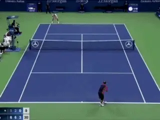
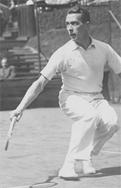
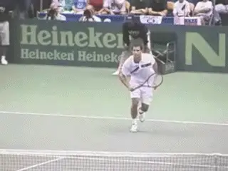
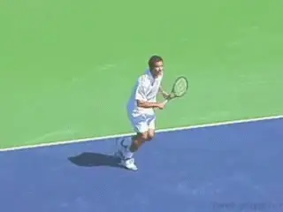
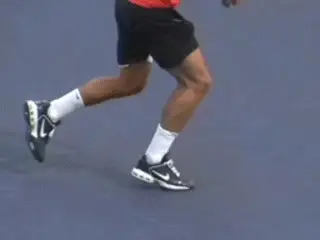
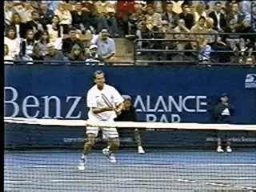
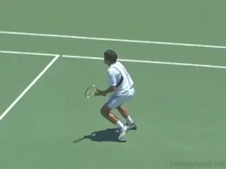
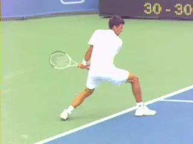

The Half Volley¶
Paul Fein¶

Roger Federer hits an incredible half volley return, the so-called SABR attack.
The half volley has become less common in elite tennis, apparently close to extinction as a regular shot. But recently it has made some dramatic reappearances.
In the 2015 US Open women's semifinals, Roberta Vinci massaged two half-volley, drop shot winners to close out her win over Serena Williams. And Roger Federer has resurrected the half volley in the men's game with his SABR returns, marveled at across the tennis world. (SABR stands for Sneak Attack By Roger, but you knew that right?)
But is the term half volley even an accurate description of the shot? Some coaches contend the shot is not a volley at all--that it's really an abbreviated groundstroke. Others say it's a form of a volley.

In the 1920's Henri Cochet regularly hit half volleys from no man's land.
What everyone agrees on is that the half volley is a ball hit only a few inches off the ground, and that it is one of the most difficult shots in tennis.
Historically the half volley was an established, regular part of the game. In the 1920's French star Henri Cochet half volleyed his way to the net from no man's land. And in the golden age of serve and volley players like John McEnroe and Stefan Edberg made the shot a regular part of attacking tennis.
Pete Sampras had a great half volley as well. The ability of these players to time this delicate shot was critical to winning multiple slam titles. As the great Ecuadorian player and coach Pancho Segura put it, \"It is impossible to attempt a net attack without a half-volley".
[As serve and volley disappeared from the modern game, however, the half volley became increasingly ignored by coaches and teaching pros.]
Don't make that same mistake. The fact is that every player needs the half volley. It's still critical in club doubles. In singles players are also forced to come forward to deal with mishits, netcords, drop shots, etc. And even heavy topspin baseliners are forced to hit it situationally in matches.

Pete Sampras: beautiful half volleys.
A mediocre or inconsistent half volley will cost you points. A topnotch half volley will neutralize your opponent's offense and help turn points in your favor. And some of these points can make the difference between winning and losing close matches.
Don't Hit It?
Because the shot is so difficult, a key part in half volley strategy is avoiding them when they aren't necessary. How?
Billie Jean King, one of the greatest volleyers in tennis history, says: \"After the point is over, trace back the circumstances that made you have to hit a half volley in the first place. If your opponent hit a good shot and forced you into a defensive posture, that's one thing.\"

On slower balls, stopping and hitting an approach may be preferable and set up an easier volley.
But most of the time you'll have to hit a half volley because of a miscalculation you made on the way to the net. Don't rush the net, either behind a service or a groundstroke, unless you're sure you can get there, and once you've decided to go forward, don't change your mind halfway through the trip.
If the ball isn't coming super-fast another option is to stop and take the ball as a groundstroke. You can split sooner or even take a step back. As an approach shot this may set up a much easier second volley.
Technical Elements
So, what are the technical components? If you are on your way to the net, play the half volley with a continental grip, the grip you use for volleys.
Even though you will be moving forward do not make the mistake of running blindly through the shot. Make sure that you split step.

Rhythm, balance, knee bend, perfect!
There is also a body turn, usually about half that of a groundstroke. It's also vital to get down low with a deep knee bend so your eyes are as close to the level of impact as possible. Stay down long enough to make solid contact with the ball and continue to let your body weight move forward as you gradually and smoothly elevate your knees.
According to research by the German Tennis Federation, the available time for a volley is often as little as a half second, so timing is crucial. You want to use your opponent's power.
This means the faster the oncoming ball, the shorter the backswing. This may mean the racket points at the side fence
The follow-through on the half volley should be smooth and controlled and is usually significantly shorter than a normal groundstroke follow-through.
Contact

A compact backswing and an abbreviate follow-through are keys.
On the forehand half volley, the contact point is slightly in front of the front foot. For the backhand half volley, the contact point is six to 12 inches farther forward. Hitting the ball behind these contact points usually produces a shot that lacks power and depth and sets up an easy passing shot for your opponent. The same unhappy fate occurs when you hit off-center, away from the "sweet spot of the strings. So, you must do everything right to half volley crisply and deep.
Generally, you contact the ball with a vertical racket face that is perpendicular to the ground. But on some half volleys, especially closer to the net, to hit the ball with enough upward trajectory, you may have to open the racket face slightly and swing more upward than usual.
Rhythm
Rhythm is the glue that keeps the parts moving smoothly together in every tennis stroke.
So, the more rhythm you can develop in your half volley, the more grooved, controlled, and consistent it will be.

To clear the net on some half volleys it's necessary to open the racket face.
Dennis Van der Meer equated it to kicking a soccer ball. \"The instant the ball touches the ground, you kick. It is a little beat one-two/one-two. Bounce and hit, with no discernible delay in between. If you can get the bounce-hit beat, then you have the half-volley rhythm.\"
Placement
[In singles, it's generally safest to aim down the line and very deep so that your half volley lands about a yard inside the baseline. If your opponent is positioned where your down-the-line shot would go, and if you have the time, go aggressively crosscourt and deep.]
In doubles, the key is to keep your half volley away from the net player. When both opponents are positioned at net, use more topspin and lower your net clearance to keep the ball at their feet.
Baseline Half Volleys
If you're half volleying a powerful groundstroke near the baseline, use your regular forehand or backhand grip. That will make it easier to add some topspin, which will in turn allow you to return the ball with a fair amount of power and control.

If you are taking the ball low to the court from the baseline, use your regular groundstroke grips.
The swing pattern is similar to the groundstroke but with great knee bend to get down to the level of the ball. Novak Djokovic and Roger Federer are masters at turning backcourt half volleys into attacking shots, a skill and tactic unheard of until this century.
A great drill for working on the half volley is to play mini-tennis with a practice partner with both of you standing either on the service line or up to a yard inside the service line. Try to hit every ball medium-speed at each other's feet to create half-volley situations.
Next, one player should position himself just behind the baseline and drive groundstrokes with varying speeds and spins at the feet of the net player. For each shot, the net player must quickly decide whether he should hit a low volley, a half volley, or a compact groundstroke. When that decision-making becomes automatic and correct, you know you're well on your way to incorporating this critical shot into your game.
author of three books: Tennis Confidential: Today's Greatest Players, Matches, and Controversies. You Can Quote Me on That: Greatest Tennis Quips, Insights, and Zingers. And Tennis Confidential II: More of Today's Greatest Players, Matches, and Controversies. Paul has received more than 30 writing awards. His websites are www.tennisconfidential.com and www.tennisquotes.com. Write to him directly at: lincjeff1@comcast.net.